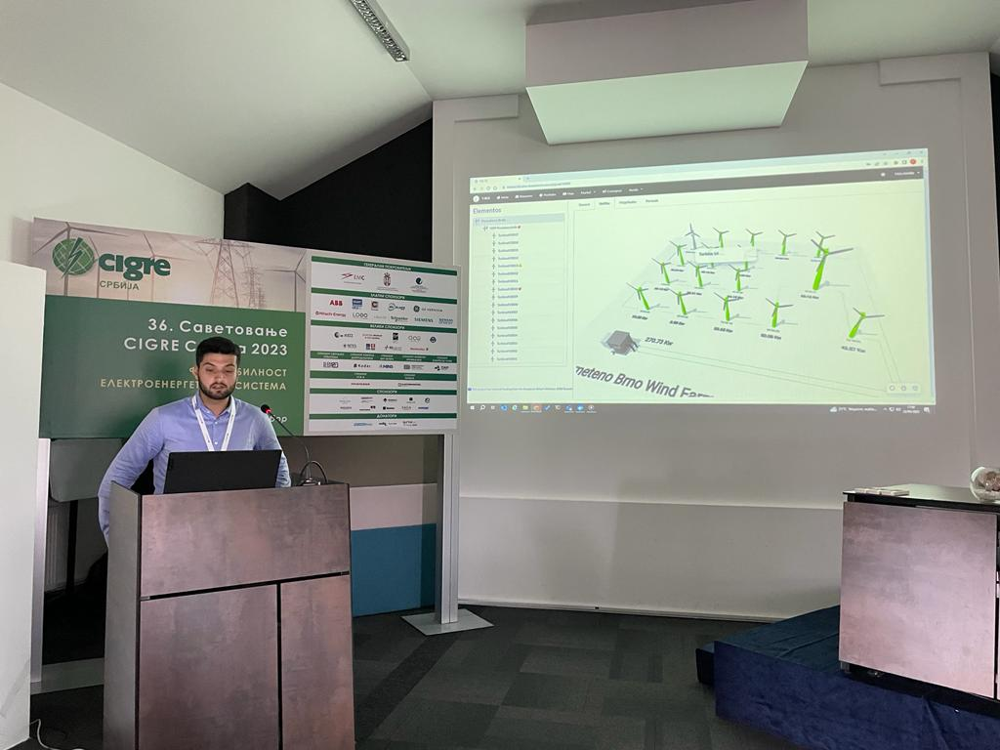

Sobre mí

Graduado en física con un máster en Big Data Analytics. Actualmente trabajando como Científico de Datos, participando en una variedad de proyectos, incluyendo iniciativas energéticas europeas.
Interesado en Inteligencia Artificial, el análisis y la visualización de datos. Este portfolio muestra proyectos que destacan mi compromiso con el aprovechamiento de los datos para obtener resultados significativos. Te invito a explorar y conectar.